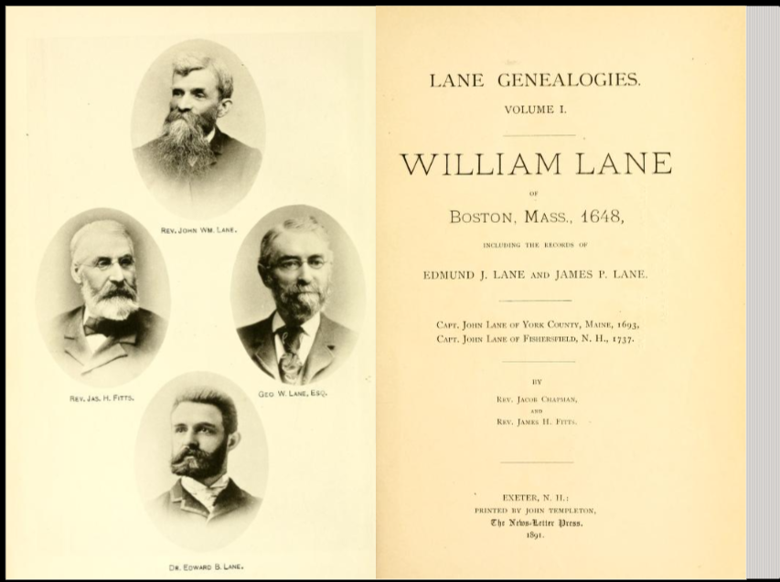

Lane Legacy Museum
A guided reel through the gallery
A quiet chronological gallery — from colonial Boston onward through later Lane generations, drawn from cited records and Lane Genealogies Vol. I (1891).
Boston origins · compilers · 1884 press · lunar naming · prominent Lanes
Opening exhibit
William E Lane
of Boston
Exhibit 1 · colonial chronology anchor
Cordwainer of Boston — Hartford and Lynn appearances, freeman 1657, and the Mary Brewer marriage. The chronology that later Lanes extend from.

Historians · compilers
Honoring the compilers
Volume I (1891) was generations in the making. Behind the plaques and printed volumes stand compilers and trustees — the editorial labor that condensed centuries into book form, now brought to life as an interactive family map.
Popular Science Monthly · May 1884
George G. Lane
“Was He an Idiot?”
A national magazine profile of a Hampton Falls man with calendrical gifts and singular abilities — noted in the Lane genealogy by his brother, Levi E. Lane.
Period language overlaps today’s idea of “idiot savant” — quoted strictly as historical wording.
Lunar nomenclature
Lane crater
observatory
Jonathan Homer Lane’s solar models helped launch stellar structure theory. The far-side crater Lane honors him (IAU, 1970).

Prominent Lanes · chronology
Chronological highlights
Continue on the memorial wall — births, deaths, places, and book-sourced excerpts.